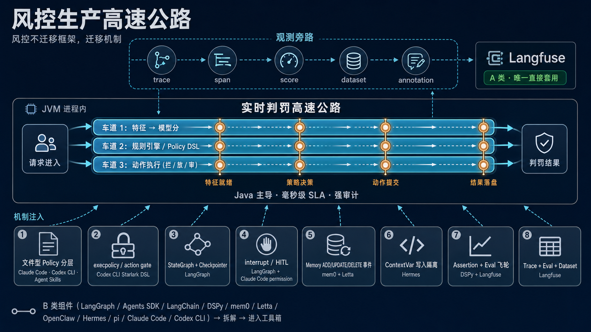
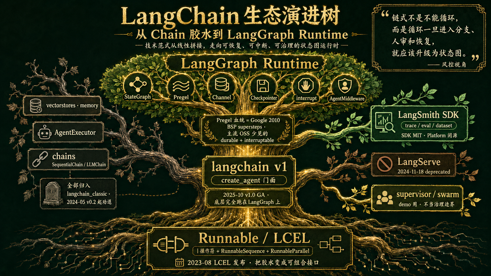

姊妹文《Agent 3 层理念架构》把 12 个组件按层位讲透了，但"理解" 不等于"采纳"。风控线有 3 条硬约束让"整框架照搬"几乎不成立：
所以这一章的核心姿势是：风控不迁移框架，迁移机制——把 trace/eval、状态图、guardrail、checkpoint、memory event、permission gate、file policy 这 7 个机制吃透，在 Java 这边自己起接口。
"能不能用" 这个问题太粗。一个组件可能在 离线调查 能用、在 实时判罚 不能用。所以按风控的 5 条实际链路打标签：
| 组件 | 实时判罚 | 离线调查 | 策略生产 | 研发提效 | 观测评估 | 归类 |
|---|---|---|---|---|---|---|
| Langfuse | 直接套（旁路观测） | 直接套 | 直接套 | 直接套 | 直接套 | A · 唯一 |
| Claude Code | 不用 | 借鉴 | 借鉴 | 直接套（研发侧） | 不用 | B · 研发侧可直用 |
| Codex CLI | 不用 | 借鉴 | 借鉴 | 直接套（研发侧） | 不用 | B · 研发侧可直用 |
| Agents SDK | 不用 | 借鉴 | 借鉴 | 借鉴 | 借鉴 | B · 抽象集模板 |
| LangGraph | 不用 | 借鉴 | 借鉴 | 借鉴 | 借鉴 | B · 架构可抄 |
| LangChain | 不用 | 借鉴 | 借鉴 | 不用 | 借鉴 | B · 接口抽象 |
| DSPy | 不用 | 借鉴 | 借鉴 | 不用 | 借鉴 | B · 离线优化思想 |
| mem0 | 不用 | 借鉴 | 借鉴 | 不用 | 借鉴 | B · 事件模型 |
| Letta | 不用 | 借鉴 | 借鉴 | 不用 | 借鉴 | B · read_only ACL |
| OpenClaw | 不用 | 借鉴 | 借鉴 | 不用 | 不用 | B · 插件契约 |
| Hermes Agent | 不用 | 借鉴 | 借鉴 | 借鉴 | 借鉴 | B · 压缩 + 写入隔离 |
| pi | 不用 | 借鉴 | 借鉴 | 不用 | 不用 | B · 边界 + hook |
为什么能用：Langfuse 开源（MIT）+ Docker 自部署 + 兼容 OpenTelemetry + 有 Java SDK，是协议层而非框架层。trace / span / score / dataset / annotation 这套数据模型正好是风控 Agent 最缺的"决策可追溯 + 闭环改进" 底座。能直接用不是因为它懂风控，而是因为它选择不绑死任何业务。
对应风控收益：① 每条判罚动作落 trace + 模型版本 + prompt 版本 + 规则版本，监管举证查询毫秒级。② 差 case 标 annotation + 进 dataset，喂回 prompt 迭代 / 微调数据。③ LLM-as-judge 自动评 + 人工复核 = 数据飞轮的源头。
风险：① Postgres + ClickHouse 后端要扛快手级 QPS，需分片 + 采样策略（典型方案：高风险动作 100% 采样，低风险 1% 采样，仅 trace head 入库）；采样会导致审计缺口，监管样本需要 100% 留存。② 评分体系偏 LLM 质量，风控自定义维度（命中规则 / 模型分 / 人审签名）需扩展 score schema。③ PII / 敏感字段脱敏——trace 直接落 prompt / tool 输入会泄露用户信息，必须 SDK 侧过滤。④ 租户隔离——多业务线共用一套 Langfuse 需 project + ACL 双层隔离。⑤ trace 写入背压不能反压主链路——必须异步 + 本地缓存 + 丢弃熔断。⑥ 自部署运维成本：Postgres + ClickHouse + Redis + Worker 一套要专人维护。
未来限制：① 核心观测能力（trace / score / dataset）可自部署 MIT；企业治理能力（SCIM / audit logging / data retention 等 /ee 模块）可能需商业授权。② OTel 协议演进可能要求 SDK 升级。
外部依据：langfuse.com/docs · langfuse/langfuse
这 8 个机制是 B 类组件里必须照搬到 Java 风控 的设计，每个都对应一个具体出处：
RISK_AGENT.md 家族管理——平台级 / 业务线级 / 团队级三档，全部进 git、PR review、人是 owner。比塞向量库优越：可读、可评审、可审计、可回滚。WAITING_HUMAN 状态，不允许 Agent 自动 commit。permission 持久化"这次允许 / 总是允许" 是 The Gate 的标准接口。ThreadLocal<WriteOrigin>。
LangChain 已经从"一个大包包天下" 演进成多仓库分层组合。当前（2025-Q4 后）的真实结构：
| 仓库 | 协议 | 状态 | 定位 |
|---|---|---|---|
langchain-ai/langchain | MIT | active | 主仓库（monorepo）：langchain-core（Runnable 抽象）/ langchain（v1 瘦身后只剩 6 模块 + create_agent）/ langchain-classic（旧 Chain/AgentExecutor/memory/vectorstores 全部隔离归档） |
langchain-ai/langgraph | MIT | active | v1 agent 真正的 runtime。CompiledStateGraph 直接继承 Pregel（graph/state.py:1391-1392） |
langchain-ai/langsmith-sdk | MIT | active | 客户端 SDK：trace / dataset / eval 上报。server / Platform 闭源付费。 |
langchain-ai/langserve | MIT | deprecated 2024-11-18 | 把 Runnable 暴露成 FastAPI 服务的工具，已退场。LangChain 推荐改用 LangGraph Platform 部署。 |
langgraph-supervisor / langgraph-swarm | MIT | auxiliary template packages | 多 Agent 模板包：适合 demo 和低风险编排，多 Agent 治理边界仍应自研。 |
关键时间线：2022-10-24 Harrison Chase 发布 LangChain 首版（9 天写成）· 2023-08-01 LCEL 发布 · 2024-01-08 v0.1 + 同时官宣 LangGraph · 2024-01-17 LangGraph 发布博客 · 2024-05-10 v0.2 把 LangGraph 写成 "the recommended way to build agents" · 2024-11-18 LangServe 标 deprecated · 2025-10-22 LangChain 1.0 + LangGraph 1.0 GA，create_agent 替换 AgentExecutor。
定位：LCEL（LangChain Expression Language）的价值不是让 Agent 更聪明，而是把 prompt → retriever → model → parser 这类线性胶水 变成可组合 Runnable。
核心抽象：Runnable（基类）/ RunnableSequence（管道）/ RunnableParallel（并行）/ RunnableLambda（包装函数）。| 操作符是纯 Python __or__ dunder，无魔法——langchain-core/runnables/base.py:619-638 直接返回 RunnableSequence(self, coerce_to_runnable(other))。统一拿到 stream / batch / async / fallbacks / retry 这些原生能力。
# LCEL 典型范例
chain = prompt | model | StrOutputParser()
chain.invoke({"question": "..."})
chain.stream({"question": "..."})
chain.batch([{"question": q} for q in qs])
解决的痛点：老 Chain 类（SequentialChain / LLMChain）不是真正可组合——每个 Chain 自带一套 streaming/async/callback 实现，跨 Chain 拼装是噩梦。LCEL 把这件事统一成一个接口 + 五种适配器。
"these chains weren't really composable. Sure - we had SequentialChain, but that wasn't amazingly usable." —— LangChain LCEL 官方博客
v1 信号：langchain 1.3+ 主包已被瘦身到只剩 6 个模块，旧的所有重东西（Chain / AgentExecutor / memory / vectorstores）全部隔离到 langchain_classic。新的 create_agent() 底层完全跑在 LangGraph 上——langchain/agents/factory.py 直接 import langgraph 的 StateGraph / ToolNode / Command / Send。
这意味着：Agent 门面留在 LangChain，真正 runtime 下沉到 LangGraph，旧链式资产进 classic。读者再听到"LangChain Agent" 不要联想老 AgentExecutor——它已经只是 LangGraph 的一个 facade。
AgentExecutor 退役原因（官方原话）："We've added a lot of parameters and functionality to AgentExecutor, but it's still just one way of running a loop."（v0.1.0 博客）
定位：LangGraph 的核心不是画图，而是用 Pregel 式状态传播 把循环、分支、恢复、人审变成可持久化执行。
Pregel 血统（官方亲口承认）："LangGraph is inspired by Pregel and Apache Beam. The public interface draws inspiration from NetworkX."。libs/langgraph/langgraph/pregel/main.py:448 docstring 明确说是 "Pregel Algorithm / Bulk Synchronous Parallel model"，每步分 Plan / Execution / Update 三阶段。
核心抽象：
StateGraph：用户描述节点 + 条件边 + 状态 schemaChannel：节点间通信通道，常用类型包括 LastValue / Topic / BinaryOperatorAggregate / EphemeralValue / AnyValue（reducer 决定如何合并多入边的写入；另有 DeltaChannel 等 beta 类型）Checkpointer：每次 superstep 后把 state 持久化（SQLite / Postgres / Redis），挂了能从断点恢复interrupt()：在任意节点调用 → 写盘 + 退出 → 外部喂回人审决策 → 继续。在主流 OSS Agent runtime 里少见地同时提供 durable + interruptable + state-editableAgentMiddleware（v1 引入）：官方切面机制，可拦截每次 model call / tool call# LangGraph 典型范例
graph = StateGraph(State)
graph.add_node("plan", plan_fn)
graph.add_node("act", act_fn)
graph.add_node("review", lambda s: interrupt({"need": "human approval"}))
graph.add_conditional_edges("plan", route_fn, {"safe": "act", "risky": "review"})
graph.add_edge("review", "act")
app = graph.compile(checkpointer=SqliteSaver(...))
app.invoke({"goal": "..."}, config={"thread_id": "case-123"})
定位：LangSmith 是 LangChain 生态的商业观测面。SDK（langsmith-sdk）MIT 开源可嵌入任何 Python / TS 应用（甚至非 LangChain）。但 server 端、Platform、Self-hosted 全部闭源付费。
能力：trace（run tree）+ dataset（黄金集）+ evaluation（LLM-as-judge + 人工标注）+ prompt versioning + experiment comparison。
使用边界：可以用 SDK 自己往任意后端（Langfuse / 自建 ClickHouse）转发；但不能假设 LangSmith server 是开源基础设施。风控选 Langfuse，不是 LangSmith——同样的能力 + MIT 全栈 + 内网自部署。
LangServe：明确 deprecated（2024-11-18 起，仓库 README 已挂"This repository is no longer actively maintained" 标记）。原作用：把 Runnable 包成 FastAPI 服务并发 OpenAPI。LangChain 官方建议改用 LangGraph Platform（闭源付费）或自己起 FastAPI。
supervisor / swarm：辅助模板包——LangGraph reference 仍把它们列在多 Agent 章节，适合 demo 和低风险编排。两者本质是多 Agent 编排模板包，适合 demo 和低风险场景，风控生产 不应把它当治理边界——治理要走 The Gate + URG，不能让模板包替治理决定。
这是用户长期困扰的问题："链式调用不能解决循环吗？为什么演进？"——下面 5 段 LangChain 自己的话，给出完整证据链。
LangChain 生态全是 Python（少量 TS），风控线 Java 主导不能进进程内。所以"用 vs 不用" 的判断要按链路 来：
| 能力 | LangChain 生态怎么做 | Java / 风控怎么承接 |
|---|---|---|
| Runnable / 管道 | LCEL | 操作符 + RunnableSequence | Spring AI 1.x ChatClient 的 fluent API + 自研 Builder DSL（不要直接引 langchain-core） |
| Agent runtime | LangGraph StateGraph + Checkpointer + interrupt | LangGraph4j（JVM 端口，提供 Spring AI integration，可与 Spring AI 并用）或自研最小状态机 ~150 行（v1 case 不复杂时优先） |
| Retriever / RAG | Document / Retriever / 向量库适配 | Spring AI VectorStore + DocumentRetriever，背后接公司已有的向量库（Milvus / Tair Vector） |
| Tool 注册 | LangChain Tool + LangGraph ToolNode | Spring AI @Tool 注解 或自研 ToolRegistry；动作粒度按 The Gate 的 plugin-package-contract 声明 |
| trace / eval | LangSmith（闭源付费） | Langfuse（MIT 自部署 + Java SDK）← 这是 A 类直接套 |
| HITL | LangGraph interrupt() | 自研 WAITING_HUMAN 状态 + 工单系统对接（审核员侧入口在 The Gate UI） |
一句话原则：用 LangChain 的概念，不用 LangChain 的 Python runtime。把 Runnable / StateGraph / Checkpointer / interrupt / Channel / Reducer 这些词汇 在 Java 这边各起一个类——是最省脑的起点，也是未来与社区对话的最低成本。
承上启下：本文两章给出了"不迁移框架、迁移机制" 的硬清单和演进证据；继续阅读姊妹文《Agent 3 层理念架构 · 第 6 章 三层选型决策树》——把这些机制反查到三层失败症状：你遇到什么问题，去哪一层加什么，对应哪个组件的哪个机制。